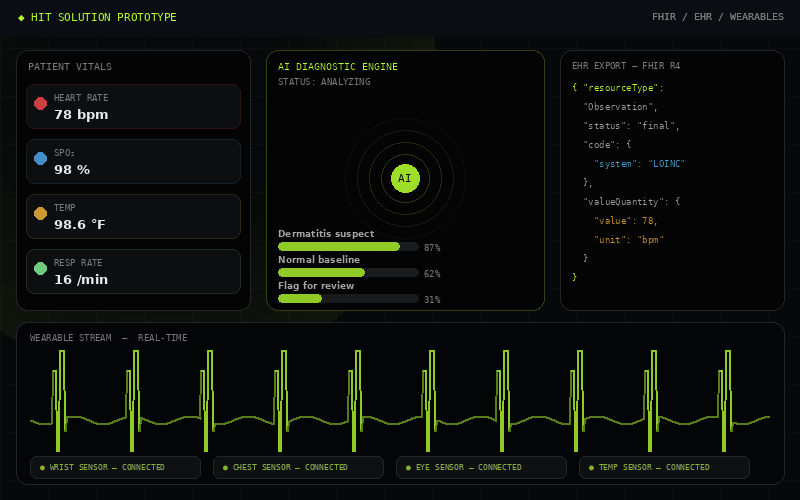

HIT Solution Prototype
AI-enhanced telehealth platform integrating wearable biometrics and FHIR-compliant EHR export to bridge the physical exam gap in remote care.
Designed an AI-Enhanced Telehealth Diagnostics System to close the physical exam gap in remote patient care. The platform integrates wearable biometrics, computer vision, and an AI diagnostic support engine with FHIR-compliant EHR export — providing physicians with structured, exam-quality data during virtual appointments. Built to serve patients in rural, mobility-limited, and home-bound settings where in-person care is inaccessible.
- FHIR & EHR integration
- AI diagnostic support systems
- Health IT system design
- Clinical workflow prototyping
- Patient-centered UX